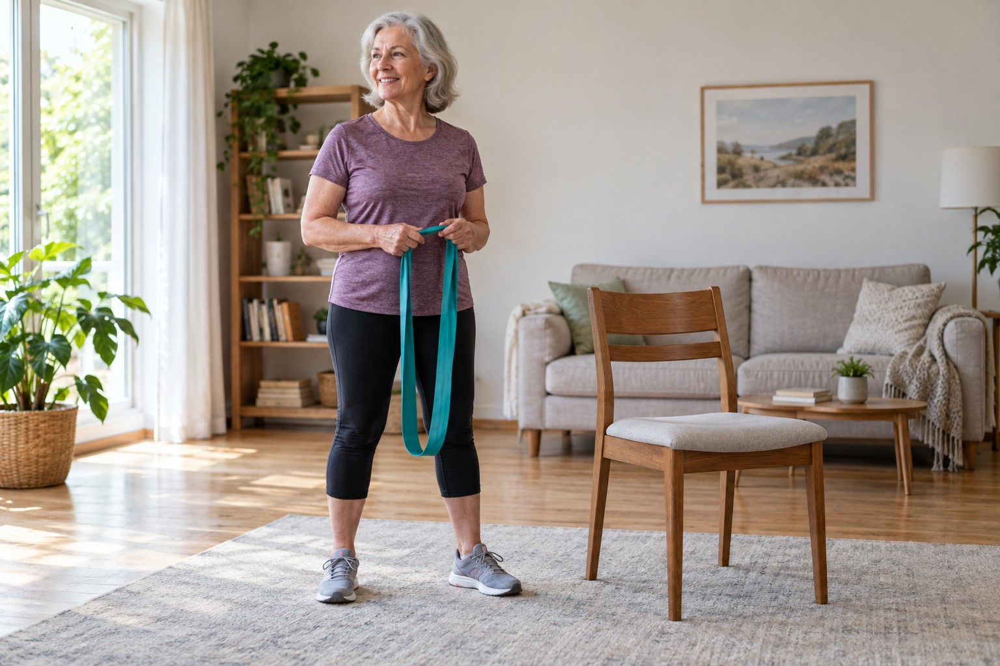
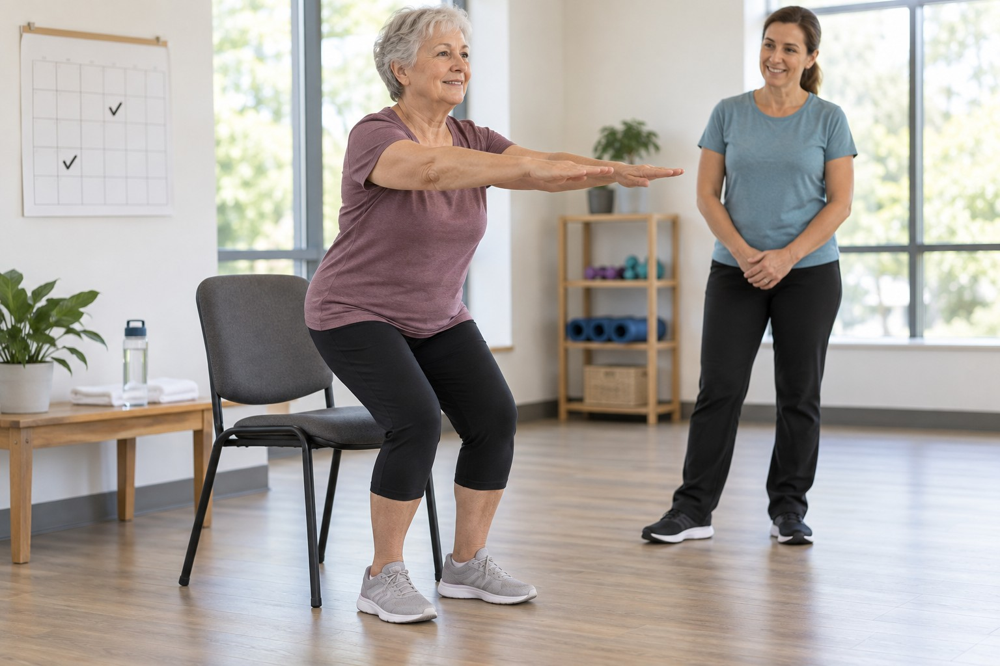
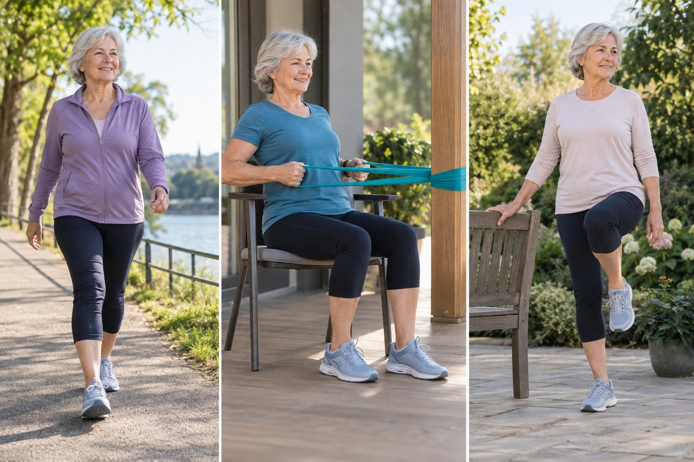
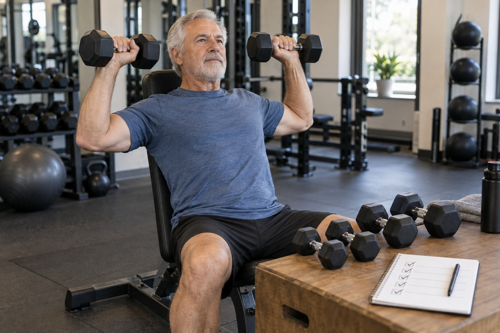
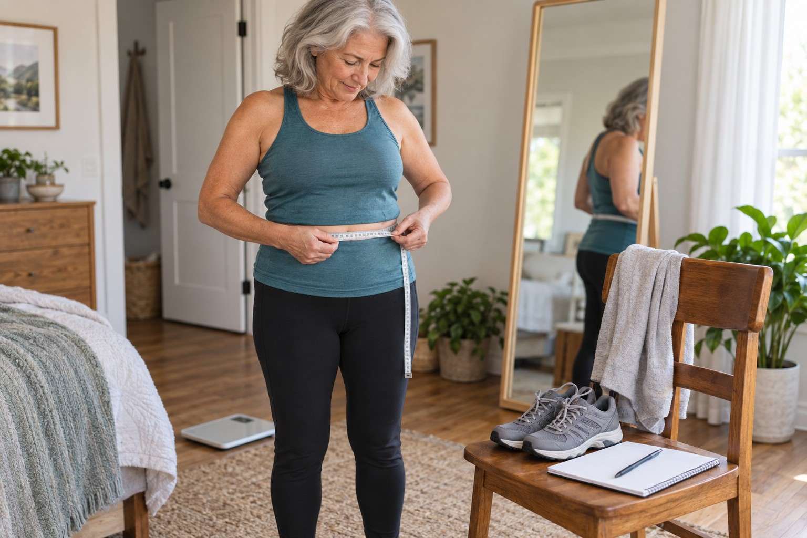

Szybka odpowiedź
Po 50-tce powrót do formy zacznij od dawki, po której możesz normalnie funkcjonować następnego dnia. Dla wielu osób oznacza to dwa krótkie treningi siłowe, spokojne marsze i proste ćwiczenia równowagi. Sam wiek nie nakazuje pełnego pakietu badań, ale objawy alarmowe, niestabilna choroba lub powrót po poważnym leczeniu wymagają oceny medycznej.
Kluczowe wnioski
- Wiek powyżej 50 lat sam w sobie nie jest wskazaniem do próby wysiłkowej przed lekką aktywnością.
- Na start wystarczą dwa krótkie treningi siłowe, marsz i ćwiczenia równowagi dopasowane do obecnej sprawności.
- Mała objętość treningu oporowego może już poprawiać funkcję i siłę osób starszych.
- Postęp oceniaj po regularności, funkcji i tolerancji wysiłku, a nie wyłącznie po masie ciała.
Czy przed startem każdy musi zrobić komplet badań?
Nie. Wytyczne przesiewowe ACSM opierają decyzję na dotychczasowej aktywności, planowanej intensywności oraz objawach i rozpoznanych chorobach sercowo-naczyniowych, metabolicznych lub nerek. Osoba bez takich objawów może zwykle zacząć od lekkiego lub umiarkowanego ruchu i zwiększać dawkę stopniowo.
Przerwij plan i skonsultuj się pilnie, gdy pojawia się ból lub ucisk w klatce, omdlenie, duszność przy małym wysiłku, nowe kołatanie serca albo nietypowe wyczerpanie. Oceny wymaga też niestabilna choroba lub powrót po poważnym leczeniu. Zwykłą profilaktykę opisuje przewodnik badań po 50-tce.
Co jest naprawdę potrzebne do pierwszego treningu?
Potrzebujesz bezpiecznego miejsca, stabilnego obuwia odpowiedniego do aktywności i kilku ruchów, które umiesz kontrolować. W domu wystarczą krzesło, ściana i guma oporowa. Zegarek, suplementy, pas treningowy oraz roczny karnet mogą być wygodne, ale nie uruchamiają adaptacji za Ciebie.

Trener pomaga, jeśli nie znasz techniki, boisz się ruchu po urazie albo potrzebujesz modyfikacji pod ograniczenia. Nie musi jednak towarzyszyć Ci stale. Pierwszą wizytę na sali i wybór ćwiczeń opisuje poradnik jak zacząć na siłowni po 50-tce.
Jak powinny wyglądać pierwsze dwa tygodnie?
Wybierz dwa niekolejne dni treningu całego ciała. W każdym wykonaj po jednej serii pięciu lub sześciu prostych ruchów i zakończ serię z wyraźnym zapasem. W pozostałe dni idź na marsz trwający od dziesięciu do trzydziestu minut, zależnie od obecnej tolerancji wysiłku.

Badania u osób starszych pokazują, że już mała objętość treningu oporowego może poprawiać funkcję i masę beztłuszczową. Nie trzeba więc nadrabiać przerwy w pierwszym tygodniu. Lekka bolesność mięśni jest możliwa; ostry ból stawu, zawroty głowy lub objawy krążeniowe wymagają przerwania ćwiczenia. Prosty rytm zawiera plan 3×30 po 50-tce.
Jak połączyć siłę, marsz i równowagę?
Każdy z tych elementów robi coś innego. Trening oporowy wzmacnia mięśnie, marsz rozwija wydolność, a równowaga pomaga utrzymać kontrolę ruchu. WHO zaleca osobom starszym aktywność wieloskładnikową z naciskiem na siłę i równowagę co najmniej trzy dni w tygodniu, szczególnie w profilaktyce upadków.

Na początku nie potrzebujesz osobnego godzinnego treningu równowagi. Dodaj po dwa krótkie ćwiczenia przy stabilnym podparciu po treningu siłowym, a marsze rozłóż na inne dni. Jeśli grozi Ci upadek, masz zawroty głowy lub zaburzenia czucia, dobór ćwiczeń omów z fizjoterapeutą albo lekarzem.
Jak zwiększać obciążenie od trzeciego do szóstego tygodnia?
Najpierw popraw powtarzalność i technikę. Gdy dwa kolejne treningi wykonujesz bez narastającego bólu i z wyraźnym zapasem, dodaj jedno lub dwa powtórzenia. Później możesz zwiększyć opór albo dołożyć serię. Nie podnoś jednocześnie ciężaru, czasu marszu i liczby sesji.

W przeglądach treningu oporowego różne kombinacje obciążenia i liczby serii poprawiały siłę lub mięśnie, dlatego nie istnieje jeden obowiązkowy schemat dla każdego. Jeśli sen się pogarsza, ból narasta albo wynik spada na kilku sesjach, wróć do poprzedniej dawki. Typowe pułapki omawia artykuł o błędach początkujących.
Jak mierzyć efekty bez obsesji na punkcie wagi?
Waga nie odróżnia tłuszczu, mięśni, glikogenu i wody. Zapisuj regularność, liczbę poprawnych powtórzeń, tempo na znanej trasie oraz łatwość wstawania z krzesła i noszenia zakupów. Obwód pasa mierz w tych samych warunkach, a nie kilka razy dziennie.

Wybierz dwa lub trzy wskaźniki zgodne z celem i sprawdzaj je co cztery tygodnie. Brak szybkiej zmiany sylwetki nie oznacza braku poprawy siły, wydolności czy funkcji. Dalszy plan i rozwój ćwiczeń znajdziesz w Centrum Treningu Siłowego.
| Okres | Trening siłowy | Marsz i równowaga |
|---|---|---|
| Tydzień 1–2 | 2 dni, po 1 serii podstawowych ruchów | Krótkie marsze; równowaga przy podparciu |
| Tydzień 3–4 | Więcej powtórzeń albo druga seria | Stopniowo dłuższy jeden marsz |
| Tydzień 5–6 | 2–3 dni zależnie od regeneracji | Utrzymanie regularności i kontroli |
| Po 6 tygodniach | Ocena techniki, siły i bólu | Zmiana jednego parametru naraz |
Najczęściej zadawane pytania?
Czy po 50-tce trzeba zrobić badania przed ćwiczeniami?
Nie każdy potrzebuje pełnego pakietu. Zakres zależy od objawów, rozpoznanych chorób, dotychczasowej aktywności i planowanej intensywności; objawy alarmowe wymagają oceny medycznej.
Czy trener personalny jest konieczny?
Nie. Może ułatwić naukę techniki i dopasowanie ćwiczeń, ale prosty, bezpieczny plan można rozpocząć również bez stałej opieki.
Jak często ćwiczyć na początku?
Dwa niekolejne dni treningu siłowego, spokojne marsze i krótkie ćwiczenia równowagi to rozsądny start dla wielu osób. Dawka musi pasować do obecnej sprawności.
Kiedy zwiększyć ciężar?
Gdy dwa kolejne treningi wykonujesz technicznie, bez narastającego bólu i z zapasem powtórzeń. Zwiększaj tylko jeden parametr naraz.
Plan startowy, ćwiczenia, progresję i zasady bezpieczeństwa znajdziesz w Centrum Treningu Siłowego po 50-tce.
Źródła
- ACSM — preparticipation screening and getting started with exercise
- WHO — Guidelines on physical activity and sedentary behaviour
- WHO — Physical activity and sedentary behaviour: brief for older people
- National Institute on Aging — Health benefits of exercise and physical activity
- Resistance training volume in older adults — systematic review and network meta-analysis
Uwaga: Artykuł ma charakter informacyjny i edukacyjny. Nie zastępuje konsultacji, diagnozy ani indywidualnego leczenia.